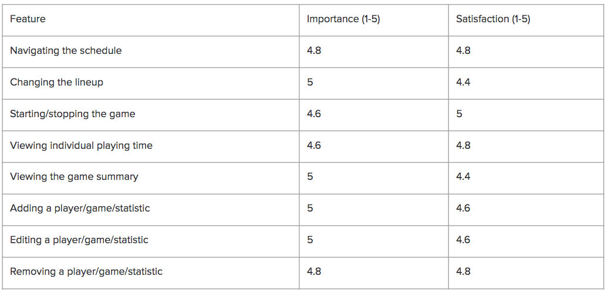

0. context
Lightweight stat-tracking apps for non-major-revenue sports games
At the moment, there aren't any lightweight stat-tracking applications appropriate for use in non-major-revenue sports games, especially at the amateur level.
- High-revenue sports use ultra-expensive cameras and proprietary software to automatically record in-game statistics.
- More lightweight alternatives are time-consuming and often not customizable.
- As a result, most coaches lack the ability to track statistics in live-time during games or view summaries retroactively, and therefore they often lack sufficient information to make intelligent adjustments for both current and future games.
Some alternative apps
01. needs assessment
User Persona
One of our developers has been on the Michigan Field Hockey team for four years, and one of the people who brought this problem to our team was Toby Sota. She has been a manager for over 2 years and one of her tasks is to track statistics. Based on a 60-minute user interview, I synthesized a user persona from Toby's experience.
Sees:
- Questionable coaching decisions
- Effective stat-tracking at the professional level
Feels:
- Frustration
- Guilty
Thinks:
- Inefficiency
- Ineffective
Wants:
- Strives to improve
- Wishes there was an alternative
User Persona: Kevin, a manager of a student hockey team
Thinks
For every game, Kevin needs to set up his own Excel spreadsheet with all the players and statistics he needs to track. He thinks this is very inefficient, because he often misses something and usually has to rewatch a game. When he is done, she usually does not have time to also create a summary of all these statistics. As a result, he usually ends up sending out the spreadsheet as is.
Sees
Almost every game, Kevin sees coaches make questionable decisions simply because they were misinformed. He also sees the effective stat-tracking at the professional level and wishes he could use something similar. However, he understands that this would be way too expensive for amateur sports teams.
Feels
He feels frustrated because he works disproportionately hard relative to the information he provides. In addition, he feels guilty when he sees coaches make misinformed decisions that he could have helped to prevent.
Wants
Kevin takes pride in his work and is willing to be proactive in improving the quality of his work. If only he had an application that would help him with this.
User Needs
Live-time Tracking
Stat Summary
Customizable System
02. MVP 1
User Flow
For a prototypical user, I created user flows that takes them from their entry point through a set of steps towards several necessary actions.
Log in and out
- From the log in screen, user logs in with “umfh@umich.edu” as the email and “goblue” as the password.
- From the home screen, user clicks the "log out" button to log out.
Customizable stats: view, add, remove, and edit
- From the home screen, user clicks the "statistics" button to the statistics page.
- On the statistics page, user views the list of statistics and adds a new statistic called “Tackles” (item 1)
- On the statistics page, user edits the statistic he just added and changes the name to “Tips” (item 2).
- On the statistics page, user removes the statistic he just edited (item 3).
Real-time stat tracking: game, player, time, action
- From the statistics page, user clicks the "home" button to the homepage.
- From the homepage, user clicks the "schedule" button to the schedule page.
- On the schedule page, user is navigated to the games in October, 2016 (item 4).
- Track the statistics for the Michigan State game. Add some stats (item 5).
Stat summary
- From the game tracking page, user clicks the "back" button to the schedule.
- User clicks on the summary button and is navigated to the summary page.
- On the summary page, user views a summary of the game that just tracked (item 6).
- On the summary page, user added a future game (item 7).
UI of MVP 1

Usability Testing for MVP 1
Our testers included two players, one manager, and two coaches, who are all part of the University of Michigan Field Hockey Team. After introducing the MVP to them, we asked them to complete a certain tasks, such as view and update stat, locate and select players, and view team summaries. After that, we collected their ratings and opinions on some key features.

MVP 1 user testing results
Feedbacks from players and managers
The first three testers, which are the players and the manager, were pretty satisfied with our app. They did have a few comments. Especially, two of the players thought it would be useful to incorporate video. For example, if they clicked on the total number of goals on the summary screen, they would want to see a highlight video with all of the goals scored in that game.
Feedbacks from coaches
The last two testers, which are the coaches, were a little more critical and their biggest concerns had to do with tracking and viewing statistics. They did want to make it easier to select the players in the tracking screen. In addition, they also want to be able to track and view the individual playing time of each player.
03. iterations
Updates of MVP 2
Based on the feedbacks of usability testing, our team incorporated some new features as well as improved the user interfaces in our MVP2.
Stat tracking page
MVP1 Feedbacks
- One of the users' biggest concerns was the efficiency of the tracking screen because it would be difficult to locate and select a player during gameplay.
- Users also felt that a valuable stat to most coaches would be playing time.
- One other small comment we got was that it was hard to tell which game was currently being tracked.

MVP2 Updates
- New feature added: Our solution was to sort the roster based on who is currently in the game, with those players appearing at the top of the list. We also added a button next to each player’s name to insert or remove them from the game, at which time the list would rearrange.
- New feature added: We have added a “global pause/resume” button that appropriately pauses/resumes playing time tracking for each player based on whether they are in the game.
- UI improvement: the current game is indicated on the top of the page.
Stat summary page
MVP1 Feedbacks
- Some of the testers mentioned that individual stats are as valuable as team totals.
- Some of the testers felt confused about which game they were looking at.

MVP2 Updates
- UI improvement: Pie charts contain not only the stats of team totals but also the data of top players.
- UI improvement: The current game is indicated on the top of the page.
UI of MVP 2
Feedbacks on MVP 2

Coaches' feedbacks on MVP 2
The coaches are more satisfied with MVP2, although they did have a few comments. One of the coaches wanted the data to be exportable, so they could manipulate the data on their computers in Excel for example. In addition, the other coach wanted to be able to see everyone’s individual playing in the game summary screen. If we were to go forward with our application, we would probably decide to implement these features next.
04. final
Lightweight stat tracking for any sport at any level
For amateur and low-revenue sports organizations who have a minimal budget, time and/or personnel constraints, and a unique use case, Bolt is a web app that provides a lightweight, low-cost, customizable stat tracking framework. Unlike competitors like TeamSnap, we have assembled a free web application that provides the minimum feature set to bring the power of data to the masses.
To play with the web app:
05. Reflection
This project was completed in a total of 12 weeks with 3 developers. Through this project, I learned that every developer has his or her own work process. As a UX/UI designer, it's important for me to understand how they like to work, ask how they would like the screens to be delivered and what's their experience with other designers for better cooperations.
UX Research
Interview
Persona
User Flow
Interview
Persona
User Flow
UX/UI Design
Wirefreaming and Prototyping
Visual Mockups
Usability Testing
Wirefreaming and Prototyping
Visual Mockups
Usability Testing